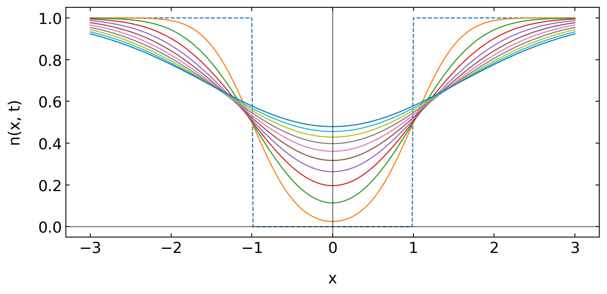
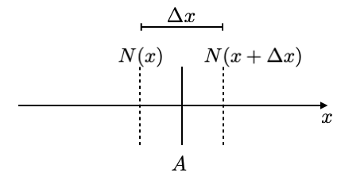
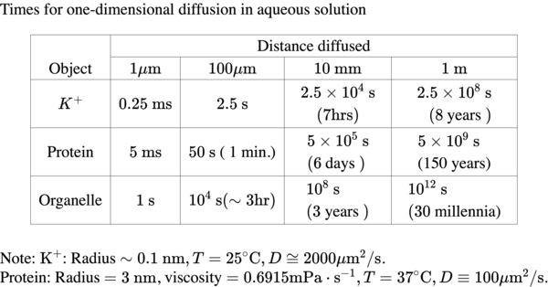
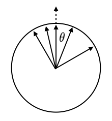

20 Flows and Transport in Liquids
20.1 Translational Diffusion
For describing the transport and the dynamics of objects we need to write down some basic relations that will later gover our analysis. One is of course the continuity equation essentially stating that in the absence of sources or sinks, material flowing into a system has to move out of it as well. The flow is characterized by a current density \(\textbf{j}\). The flow through a surface is then goverened by the normal components of the flow with respect to the surface having a normal \(\textbf{n}\).
The total flow through a surface is then
\[ \int_{S}\textbf{j}\cdot \textbf{n}dS \]
If \(f\) is now some quantity (a density, probability density or other) that can beb transporeted through a surface or exist inside a volume surrounded by an area, the total amount inside the volume is given by
\[ \int_{V}f\cdot dV \]
The change of the total content inside the volume with time is then
\[ \frac{d}{dt}\int_{V}f\cdot dV=\int_{V}\frac{df}{dt}\cdot dV \]
This then yields the continuity equation
\[ \frac{df}{dt}+\nabla \textbf{j}=0\tag{Continuity Equation} \]
If we specifically consider the number density \(n\) and insert this as \(f\)
\[ \frac{dn}{dt}+\nabla (n\textbf{v})=0 \tag{Continuity Equation for n} \]
The continuity equation states that the amount of the quantity (such as mass, charge, or energy) within a defined system can only change if there is a flow of that quantity into or out of the system. More generally, the continuity equation may have a source term on the right side instead of the \(0\) when there is a production or destruction of the quantity in the volume.
As the next step, we would like to obtain an equation, which tells us about the flow of the density of objects, due to their Brownian motion. We consider a vertical wall of area \(A\), which separates two regions. There are \(N(x)\) on the left and \(N(x+\Delta x)\) on the right of area \(A\).

We can calculate the number of particles that goes through the area from the difference of the number of particles on the left and on the right side and divided by the area where the particles go through and the time \(\tau\) they need to go through that this is the current density \(j\)
\[ j=-\frac{1}{2}\frac{N(x+\Delta x)-N(x))}{A\tau} \]
The fact, the one half makes sure that we consider only 50% of the particles on the left side going through the area while the other 50% go further to the left.
We can also rewrite the number of particles in terms of the density \(n\)
\[ n(x)\equiv \frac{N(x)}{A\Delta x} \]
where \(\Delta x\) and a span a volume from which the particles travel through the area \(A\). With the help of the density, we can replace the number of particles in the equation before and obtain an equation, which only contains the density of the particles.
\[ j=-\frac{1}{2}\frac{n(x+\Delta x)A\Delta x-n(x)A\Delta x)}{A\tau} \]
\[ j=-\frac{1}{2}\frac{\Delta x^2}{\tau}\frac{n(x+\Delta x)-n(x)}{\Delta x} \]
You can see that the area a drops out of the equation and we can sub summarise the term with \(\Delta x^2\) and \(\tau\) into a new coefficient, which is the diffusion coefficient \(D\). We just arrived at the DA fusion law, which is fixed first law, which tells us that the current density is proportional to the diffusion coefficient times the negative gradient of the density.
\[ j=-D\frac{dn}{dx} \]
with
\[ D=\frac{\Delta x^2}{2\tau} \]
In 3 dimensions this yields
\[ \textbf{j}=-D\nabla n \tag{1. Ficks Law} \]
which we can also combine with the continuity equation to give
\[ \frac{dn}{dt}=D\nabla^2n \tag{2. Ficks Law} \]
which describes the time evolution of the density \(n\). This type of diffusion equation is found for many transport problems. We just have to exchange the density \(n\) by other densities:
| flux | transport property | gradient |
|---|---|---|
| particles | diffusivity | particle density |
| charge | conductivity | potential |
| liquid | permeability | pressure |
| momentum | viscosity | momentum density |
| energy | heat conductivity | temperature |
20.1.1 Diffusion in External Potential - Smoluchowski Equation
And some of the cases we may need to describe the diffusion in the presence of an external force field like we did already for the sedimentation problems we studied at the beginning of the course. The force is given by a potential gradient.
\[ F=-\frac{dU}{dx} \]
If the force, for example, acts on a colloid in a liquid, a steady speed of the colloid will appear after a while, when the force is balanced by the frictional force in the liquid, which amounts to \(F_{s}=-6\pi\eta R v\), where \(R\) is the radius of the colloid, \(\eta\) is the viscosity of the liquid. The steady speed of the colloid in the liquid under a force \(F\) is therefore given as
\[ v=-\frac{1}{\xi}\frac{dU}{dx} \]
where \(\xi=6\pi\eta R\) is the friction coefficient for a sphere. Therefore we have an additional current density due to the external force, which is given by \(j=nv\) and therefore the total current density is given by
\[ j=-D \frac{dn}{dx}-\frac{n}{\xi}\frac{dU}{dx} \]
As we will see later, the diffusion coefficient can be als written as \(D=k_{B}T/\xi\), which results in
\[ j=-\frac{1}{\xi}\left( k_B T \frac{dn}{dx} +n \frac{dU}{dx} \right ) \]
using
\[ \frac{d}{dx}\ln(n(x))=\frac{1}{n(x)}\frac{dn}{dx} \]
we find
\[ j=-\frac{1}{\xi}n\frac{d}{dx}\left( \underbrace{k_B T \ln(x)+U }_{\text{chemical\, potential}} \right)=-\frac{1}{\xi}n\frac{d\mu}{dx} \]
where we recognize the term in the bracket as chemical potential. In general, an inhomogeneous chemical potential drives currents in a system. This is the general version of Fick’s first law, while Ficks second law results in
\[ \frac{d n}{d t}=-\frac{d j}{d x}=\frac{1}{\xi} \frac{d}{d x}\left(k_B T \frac{d n}{d x}+n \frac{d U}{dx}\right) \]
or
\[ \frac{dn}{dt}=\nabla \left (D \nabla n +n\frac{\textbf{F}}{\xi}\right ) \tag{Smoluchowski equation} \]
This may be even further generalized and leads to the Fokker-Planck-Equation, which we leave out here in the discussion.
The time dependet diffusion equation
\[ \frac{\partial}{\partial t} n\left(\vec{r}, t \mid \vec{r}_0, t_0\right)=D \nabla^2 n\left(\vec{r}, t \mid \vec{r}_0, t_0\right) \]
can be solved for given boundary and initial conditions. For the following
\[ n\left(\vec{r}, t \rightarrow t_0\left|\vec{r}_0, t_0\right|=\delta\left(\vec{r}-\vec{r}_0\right)\right. \tag{initial condition} \]
\[ n\left(|\vec{r}| \rightarrow \infty, t \mid \vec{r}_0, t_0\right)=0 \tag{boundary condition} \]
we obtain the Greens function \[ n(\vec{r},t|\vec{r}_{0},t_{0})=\frac{1}{(4\pi D(t-t_0))^{3/2}}e^{-\frac{(\vec{r}-\vec{r}_{0})^2}{4D(t-t_0)}} \tag{Greens function} \]
for the diffusion equation and the corresponding boundary conditions. The Greens function is the impulse response. With the help of it, new solutions for any initial condition can be constructed. Lets assume we have an initial condition given by
\[ n\left(\vec{r}, t \rightarrow 0\right)=f\left(\vec{v}_0\right) \]
then the time dependent solution is a superposition of the Greens function solutions
\[ n(\vec{r}, t)=\int n\left(\vec{r}, t \mid \vec{r}_0, t_0\right) f\left(\vec{r}_0 \right)dr_0 \]
Let is quickly consider the solution in 1 dimension and derive some simple properties of it. The first is the mean position of the density. The mean position is calculated by
\[ \langle x\rangle=\int_{-\infty}^{+\infty} x \frac{\Delta}{\sqrt{4 \pi D\left(t-t_0\right)}} \cdot e^{\frac{-\left(x-x_0\right)^2}{4 D\left(t-t_0\right)}} d x \]
and the result states
\[ \langle x\rangle=x_0 \]
that it is constant, i.e. the initial position is staionary even though the particles spread in space. This is of course expected as there is no drift in the system to one or the other direction. As the particles still spread in space, the change is in the second moment of the distribution, which is the variance calculated by
\[ \left\langle\left(x-x_0\right)^2\right\rangle=\int_{-\infty}^{+\infty}\left(x-x_0\right)^2 n(x, t) d x = 2Dt \]
The result of this is corresponds to the mean squared displacement of a single particle. The variance of the distribution grows linearly in time and the coefficient characterizing the spread of the particles is the diffusion coefficient \(D\). The law obtained here, can be generalized to \(d=3\) dimensions by
\[ \left\langle\left(\mathbf{r}-\mathbf{r}_0\right)^2\right\rangle=2dDt=6Dt \]
A mean distance travelled is therefore related to the square root of time. This diffusion processes are rapid at short distances but very slow for largedistance as can be seen from the table below.

20.1.2 Application: Fluorescence Recovery after Photobleaching
One application of our Greens frunction approach that is frequently used in studying biological materials is Fluorescence Recovery after Photobleaching or short FRAP.
Initial condition:
\[ n\left(x, t_0\right)=\Theta(-a-x)+\Theta(x-a) \]
Boundary Condition
\[ \lim _{|x| \rightarrow \infty} n(x, t)=0 \]
Greens Function
\[ n\left(x,t | x_0, t_0\right)=\frac{1}{\sqrt{4 \pi D\left(t-t_0\right)}} e^{-\frac{\left(x-x_0\right)^2}{4D\left(t-t_0\right)}} \]
Therefore the total solution
\[\begin{align} n(x, t)=&\int_{-\infty}^{+\infty} d x_0 n\left(x, t \mid x_0, t_0\right) \cdot[\Theta (-a-x)+\Theta(x-a)]\\ =& \int_{-\infty}^{-a} d x_0 \frac{1}{\sqrt{4 \pi D \left(t-t_0\right)}} e^{-\frac{\left(x-x_0\right)^2}{4 D\left(t-t_0\right)}}\\ =& \int_{a}^{\infty} d x_0 \frac{1}{\sqrt{4 \pi D\left(t-t_0\right)}} e^{-\frac{\left(x-x_0\right)^2}{4 D\left(t-t_0\right)}} \end{align}\]
The solution of the integration is
\[ n(x, t)=1-\frac{1}{2}\left(\operatorname{erf}\left[\frac{x+a}{2 \sqrt{D\left(t-t_0\right)}}\right]-\operatorname{erf}\left[\frac{x-a}{2 \sqrt{D\left(t-t_0\right)}}\right]\right) \]
with \(\mathrm{erf}\) being the error function
\[ \mathrm{erf}(x)=\frac{1}{\sqrt{\pi}} \int_{-x}^x e^{-t^2} d t=\frac{2}{\sqrt{\pi}} \int_0^x e^{-t^2} d t \]
We can also characterize the amount of density in the bleached region as a function of time. This gives a single time trace, which we ca analyze to obtain the diffusion coefficient
\[ N\left(t, t_0\right)= \int_{-a}^{+a} n(x, t)\, d x \]
The integration of the previously obtained density then results in
\[ N\left(t, t_0\right)=\frac{\sqrt{D\left(t-t_0\right)}}{a \sqrt{\pi}}\left(1-\exp\left[-\frac{a^2}{D\left(t-t_0\right)}\right]\right)+1-\operatorname{erf}\left[\frac{a}{\sqrt{D\left(t-t_0\right)}}\right] \]
which is plotted below.
<function __main__.plot_function(D)>20.2 Rotational Diffusion
If we constrain all the points that are diffusing to a sphere of radius 1, i.e. \(\left|\vec{r}_0\right|=|\vec{r}|=1\), the we have in a spherical coordinate system no radial motion just angular motion along the remaining two angular coordinates \(\phi\) and \(\theta\).

The dynamics of the vector from the center of the unit sphere to the surface is therefore a orientational diffusion, which obeys the following diffusion equation
\[\begin{equation} \begin{aligned} \frac{\partial n\left(\Omega, t \mid \Omega_0, t_0\right)}{\partial t}=& D_{\mathrm{rot}}\left[\frac{1}{\sin \theta} \frac{\partial}{\partial \theta}\left(\sin \theta \frac{\partial}{\partial \theta}\right)\right. \\ & \left.+\frac{1}{\sin ^2 \theta} \frac{\partial^2}{\partial \varphi^2}\right] n\left(\Omega, t, \Omega_0, t_0\right) \end{aligned} \end{equation}\]
The differential operator has, without any surprise, spherical harmonics as eigenfunctions, i.e.
\[ Y_l^m=N e^{i m \phi} P_l^m(\cos \theta) \]
where \(N\) is a nomralization factor and \(P_l^m\) are the assiciated Legendre polynomials. The time dependent solution of the density \(n\) at the surface of the sphere can therefore be expressed as a sum over all surface harmonics with time dependent amplitudes \(A_{\operatorname{lm}}\left(t, \Omega_0, t_0\right)\), which depend on the initial distribution at \(t_0\).
\[ n\left(\Omega, t \mid \Omega_0, t_0\right)=\sum_{l=0}^{\infty} \sum_{m=-l}^{+l} A_{l m}\left(t, \Omega_0, t_0\right) Y_l^m(\Omega) \]
To obtain a solution for the amplitudes, we insert the series into the diffusion equation to yield
\[ \sum_{l=0}^{\infty} \sum_{m=-l}^{+l} \frac{\partial A_{l m}}{\partial t} Y_l^m=-\frac{1}{\tau_R}\sum_{l=0}^{\infty} \sum_{m=-l}^l l(l+1) A_{l m} Y_l^m \]
where \(D_{\mathrm{rot}}=1/\tau_{R}\) is the rotational diffusion coefficient. Due to the orthogonality of the surface harmonics, this finally yields
\[ \frac{\partial A_{l m}}{\partial t}=-\frac{l(l+1)}{\tau_{R}} A_{l m} \]
for each value of the integer number \(l\) and \(m\). This is solved by an exponential function
\[ A_{\operatorname{lm}}\left(t \mid \Omega_0, t_0\right)=e^{-l(l+1) \frac{\left(t-t_0\right)}{\tau_R}} \quad a_{lm}\left(\Omega_0\right) \]
where the coefficients \(a_{lm}\) are determined by the initial conditions.
The final solution is therefore
\[ n\left(\Omega, t \mid \Omega_0, t_0\right)=\sum_{l=0}^{\infty} \sum_{m=-l}^l e^{-l(l+1) \frac{\left(t-t_0\right)}{\tau_R}} a_{l_m}\left(\Omega_0\right) Y_l^m \tag{rotational diffusion} \]
A more specific solution can be obtained by assuming that there is a delta function for the density \(n\) as the initial condition, i.e.
\[ n\left(\Omega, t_0| \Omega_0, t_0\right)=\delta\left(\Omega-\Omega_0\right) \]
The delta function can be expressed in speherical coordinates as
\[ \delta\left(\Omega-\Omega_0\right)=\sum_{l=0}^{\infty} \sum_{m=-l}^l Y_{l m}^*\left(\Omega_0\right) Y_{l n}(\Omega) \]
an yields
\[ a_{lm}\left(\Omega_0\right)=Y_{l m}\left(\Omega_0\right) \]
and this finally
\[ n(\Omega, t| \Omega_0, t_0)=\sum_{l=0}^{\infty} \sum_{m=-l}^k e^{-l(l+1) \frac{(t-t_0)} {\tau_R}} Y_{lm}^*\left(\Omega_0\right) Y_{l m}(\Omega) \]
Analyzing this equation we see that the amplitudes decay exponentially with a time constant \(\tau_{R}/(l(l+1))\). The largest time constant, i.e. the time constant that prevails at long times is \(\tau_R/2\), while the dynamic behavior at short times can be multi-exponential.
20.2.1 NMR Spectroscopy/Dielectric Relaxation
The results have some immediate consquences for the analysis of experimental data coming from dielectric spectroscopy or nuclear magnetic resonance (NMR). Both techniques are very common for studying soft matter, as they address either molecular electric dipoles or nuclear magnetic dipoles, which respond to a perturbation by an external field through various processes, among them an orientational diffusion.
For dielectric spectroscopy one measures a dielectric polarization, i.e. a projection of dipoles onto an axis given by an electric field. Similarly NMR uses the projection of magnetic dipoles (nuclear spins) to the magnetic field direction to create a magnetization. If the dipole makes an angle \(\theta\) with the corresponding field, then the projection of the dipole is \(\mu \cos(\theta)\), which is responsible for the polarization/magnetization. What is probed by NMR or dielectric spectroscopy is therefore the relaxation of that cosine term.
In the sum of spherical surface harmonics, this is actually the term with \(l=1\), which is accompanied with the first Legendre polynomial:
\[ P_1^0=P_0 \cos (\theta) \quad l=1 \]
So both techniques would probe the first Legendre polynomial, but
\[ \left\langle P_{1}^0\right\rangle=\frac{1}{4 \pi} \int d \Omega P_0 \cos (\theta) \quad \rightarrow 0 \]
This is because the dynamics of the dipoles is uncorrelated and doing Brownian motion. Yet, you can have a look at the dynamics if you calculate the autocorrelation function
\[\begin{equation} \begin{aligned} \left\langle P_1^0(t) P_1^{0, *}\left(t_0\right)\right)=& P_0^2 \int d \Omega \int d \Omega_0 \cos (\theta) \cos \left(\theta_0\right) n\left(\Omega, t |\Omega_0 ,t_0\right) n_0\left(\Omega_0\right)\\ = & \frac{4 \pi}{3} P_0^2 \sum_{m=1}^l e^{-l(l+1) \frac{t-t_0}{\tau_R}}\left|C_{10 l m}\right|^2 \end{aligned} \end{equation}\]
where the \(C_{10 l m}\) are again defined by the initial conditions. So if these are delta functions, one quickly finds that
\[ \left\langle P_3(t) P_3^*(t_0)\right\rangle=\frac{4 \pi}{3} P_0^2 e^{-2\left(t-t_0\right) /\tau_R} \]
So the correlation function decay with a time constant that is half the rotational diffusion time due to the projection of the dipole to a certain direction. Here are some more details on measurements based on NMR, even though focused on magnetic resonance imaging.